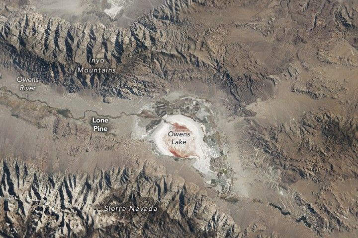

A Dusty Vestige of the Old West
This photograph of Owens Lake was captured by an astronaut aboard the International Space Station while orbiting approximately 400 kilometers (250 miles) above Earth’s surface. Owens Lake is situated between the Inyo Mountains and the Sierra Nevada in California’s Owens Valley, west of Death Valley National Park (not pictured).
At the beginning of the 20th century, Owens Lake was around 9 meters (30 feet) deep with an area of roughly 280 square kilometers (110 square miles). Between 1913 and 1927, water was diverted to the city of Los Angeles, transforming the lake into the largely dry playa shown here.
Before the diversion, Owens Lake was a terminal lake with no outflow other than evaporation. This resulted in the significant buildup of sediments and minerals over hundreds of thousands of years. Strong winds can lift bits of these materials into the air, leading to high concentrations of PM10 and poor air quality.
Adding gravel, maintaining shallow pools, and managing vegetation are among the dust control and remediation measures happening at the lake to help keep the air clear. Some of these rectangular remediation zones are visible along the eastern and southern shores of the lake. When the photograph was taken, halophilic bacteria found in salty brines gave some parts of the lakebed a red color.
For over 3,000 years, the area was home to the Owens Valley Paiute people. In the late 1850s, the discovery of valuable minerals in the valley resulted in an influx of settlers from elsewhere. In the early 1860s, settlers established Lone Pine, a gold and silver mining town, north of Owens Lake along the Owens River.
Lone Pine holds historical significance in the film industry. “The Roundup,” “The Lone Ranger,” “How the West Was Won,” “Django Unchained,” “Iron Man,” and “Gladiator” are among the 400-plus movies filmed in this region. Owens Lake still contained large volumes of water during the mining days of the 1870s and for the filming of “The Roundup” in 1920. By the time “The Lone Ranger” was filmed in 1956, much of the water had been gone for almost 30 years.